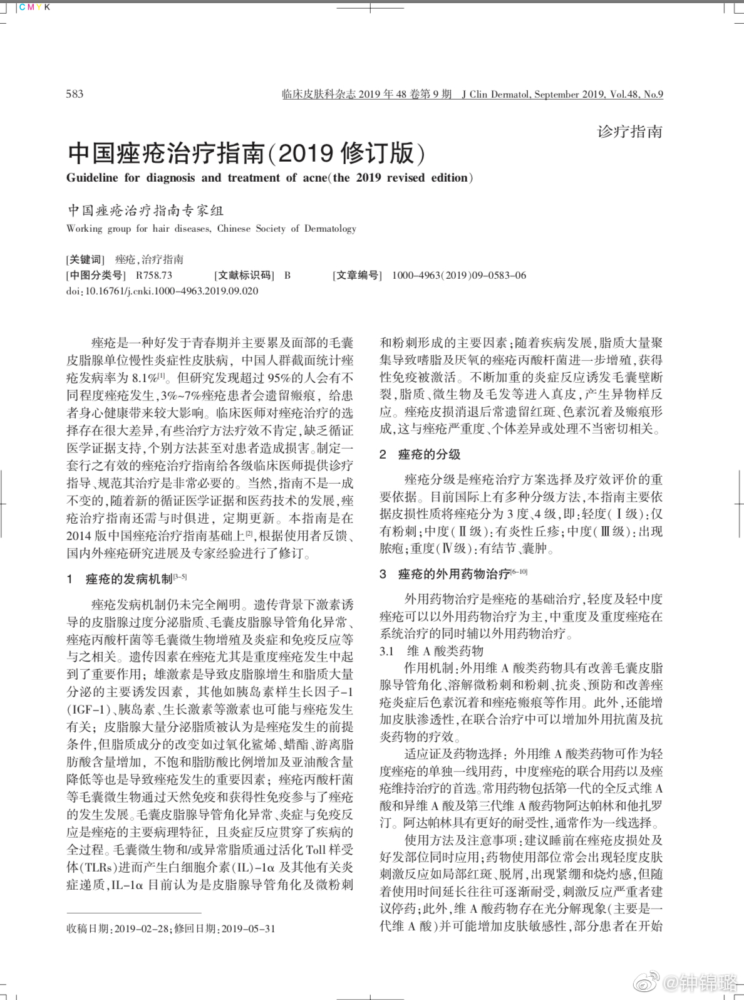
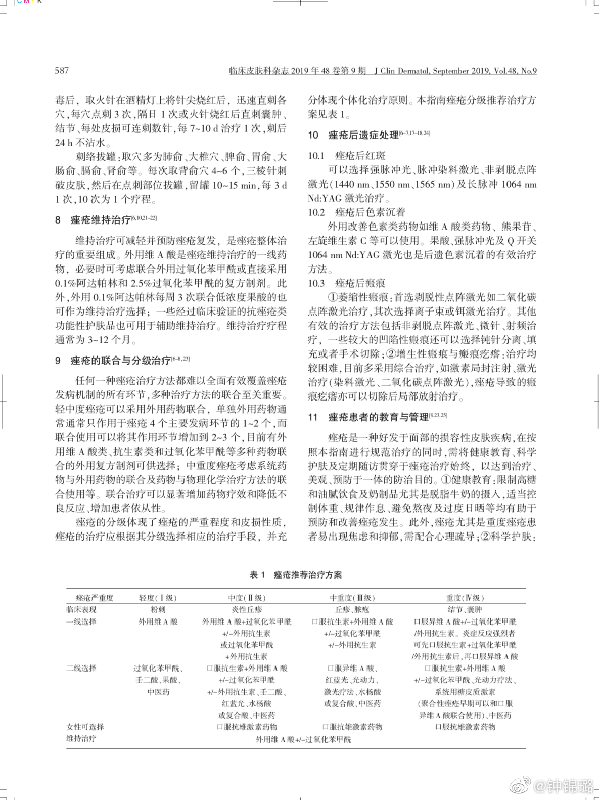
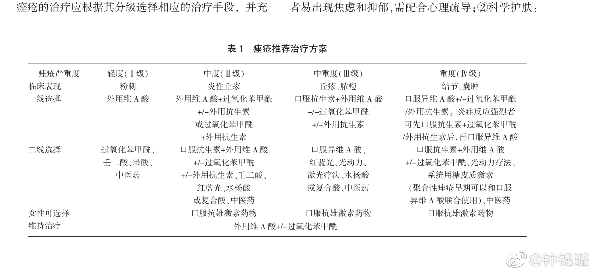

你看到了二级选项里面没有水杨酸，我看到的是"中医药"，这个词竟然与果酸并列，不可思议。分类也不是这么分的吧。@钟锦璐:非常遗憾的是，痤疮粉刺治疗的二级推荐居然只有果酸，不能不说，这个结果是非常令人惊讶和遗憾的！至于什么原因，仁者见仁，智者见智，只是希望在这个商业大潮中，各位占据各个协会的领导岗位的专家教授们，能不忘初心！医疗的最低道德底线不容突破！@尹锐---皮肤科教授 @Ada李力 @皮肤科医生林小清 @皮肤科徐宏俊医生 @皮肤医生简丹 @田艳丽医生 @医学护肤丛医生 @冰寒